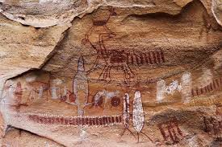
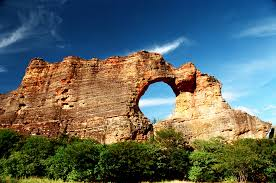

Conhecendo mais sobre esse lindo lugar!

A imagem mostra pinturas rupestres encontradas no Parque Nacional da Serra da Capivara, localizado no sudeste do Piauí, Brasil. Patrimônio Mundial: O parque é um Patrimônio Mundial tombado pela UNESCO. Maior concentração: O local possui a maior concentração de pinturas rupestres do mundo, com 912 sítios arqueológicos identificados. Pigmentos: As pinturas foram feitas com pigmentos naturais, como o ocre (óxido de ferro). Importância histórica: Os vestígios encontrados no parque, incluindo essas artes, sugerem a presença humana na região há dezenas de milênios, o que revolucionou as teorias clássicas sobre a entrada do homem nas Américas. Bioma: O parque está situado em meio à Caatinga, um bioma exclusivamente brasileiro.

A imagem mostra a Pedra Furada, a formação rochosa mais icônica do Parque Nacional da Serra da Capivara, no Piauí, Brasil. O parque é um Patrimônio Mundial da UNESCO, reconhecido como um arquivo a céu aberto sobre a origem da humanidade nas Américas. Abriga um dos maiores e mais importantes sítios arqueológicos do continente, com vestígios de atividade humana que remontam a mais de 50.000 anos. A área possui inúmeras formações rochosas espetaculares e sítios arqueológicos com pinturas rupestres. O local é um destino turístico popular na Rota das Origens do Piauí.